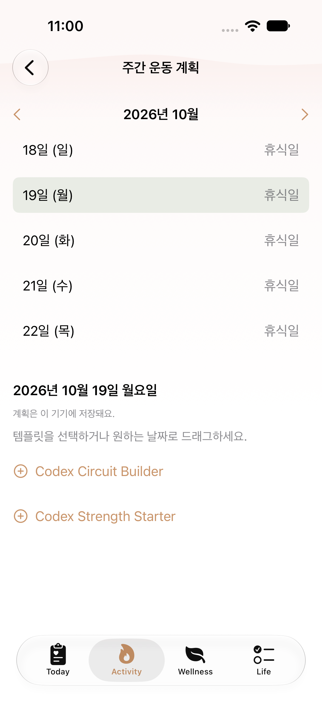
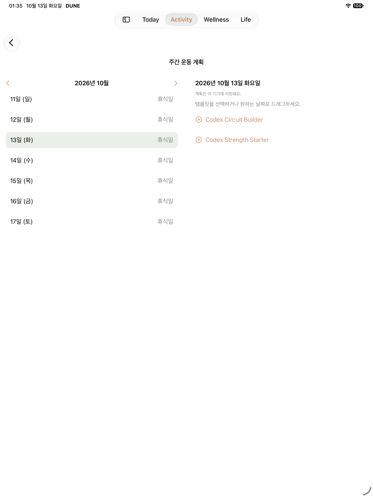
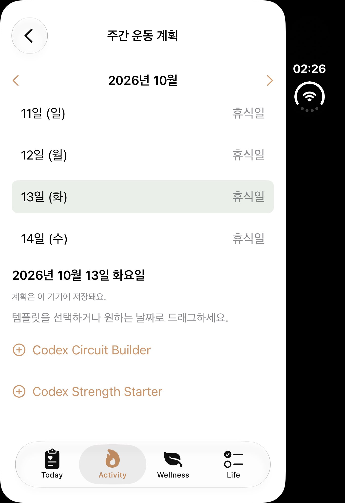
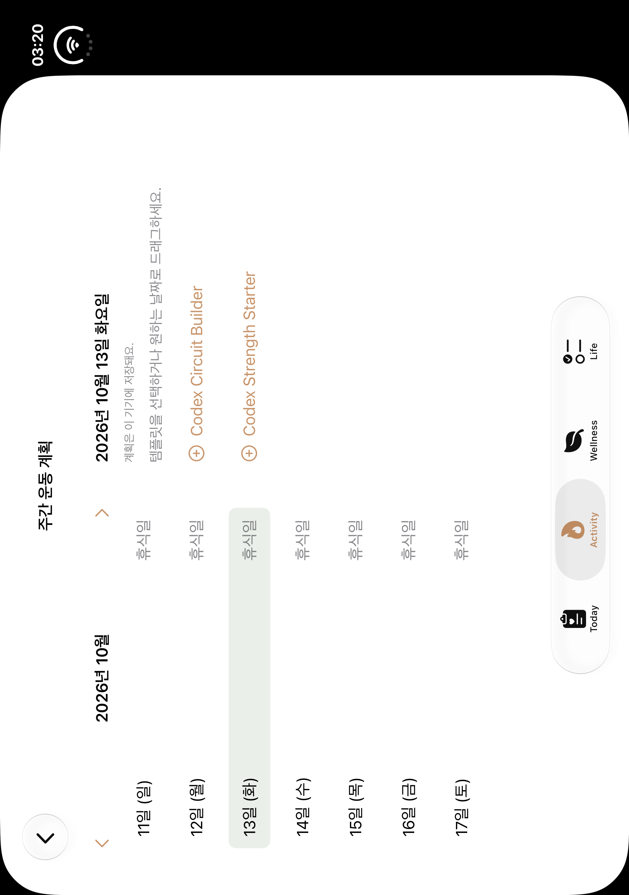
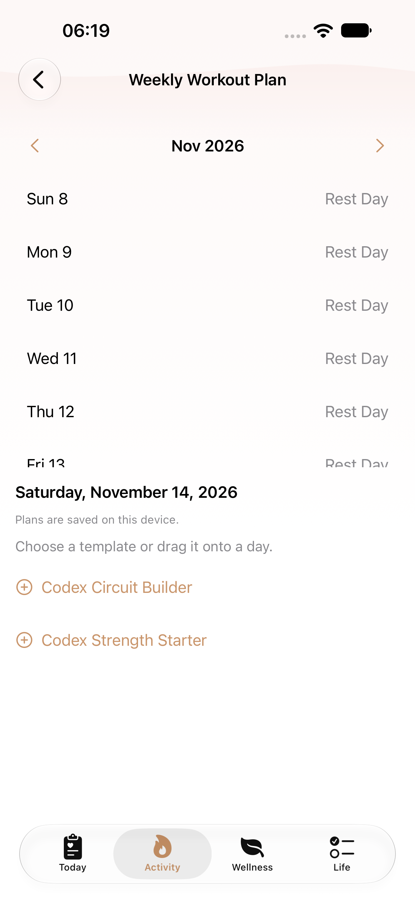
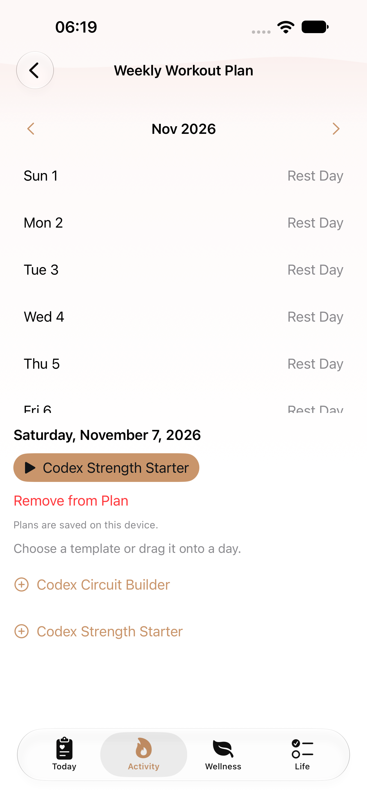
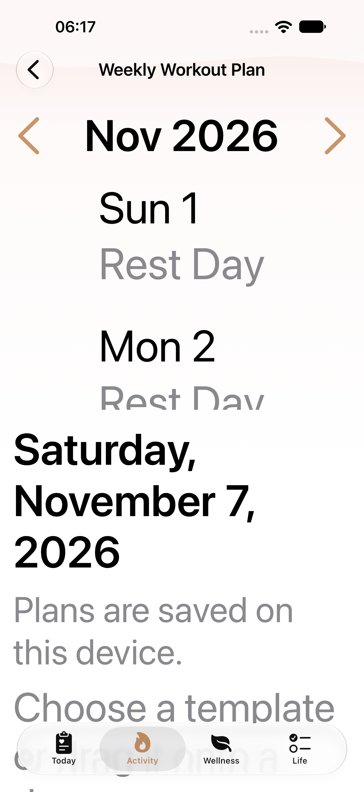
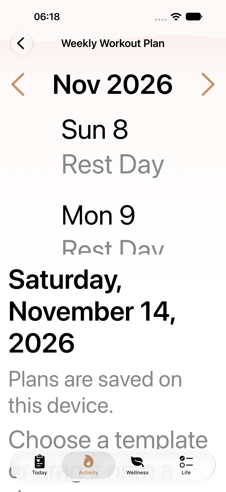
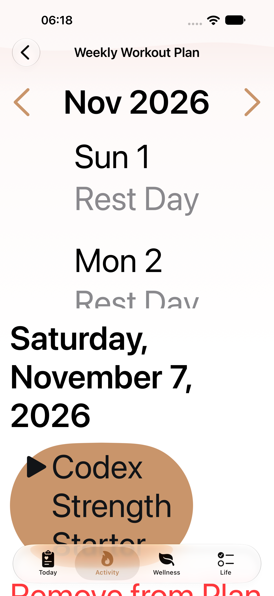
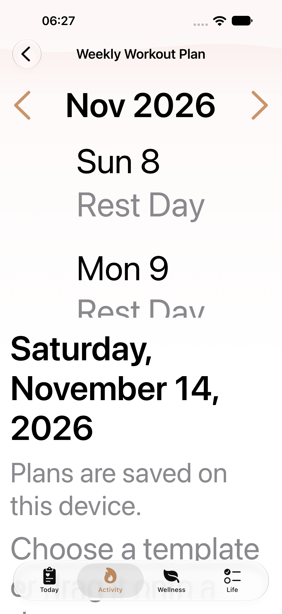

W15 · B13 native gallery
Native PNG/AX pairs are classified by completed selector receipts. Historical captures and failure diagnostics are separate. See manifest for source revisions and limits.
Pending or limited- phone-retry1 W15 normal current seven-day plan and template pane: named PNG/AX pair absent
- phone-retry1 W15 normal next week dates: named PNG/AX pair absent
- phone-retry1 W15 normal assigned seeded template: named PNG/AX pair absent
- ipad W15 normal current seven-day plan and template pane: named PNG/AX pair absent
- ipad W15 normal next week dates: named PNG/AX pair absent
- ipad W15 normal assigned seeded template: named PNG/AX pair absent
- ipad W15 MAX current seven-day plan and template pane: named PNG/AX pair absent
- ipad W15 MAX next week dates: named PNG/AX pair absent
- ipad W15 MAX assigned seeded template: named PNG/AX pair absent
- ipad-retry1 W15 normal current seven-day plan and template pane: named PNG/AX pair absent
- ipad-retry1 W15 normal next week dates: named PNG/AX pair absent
- ipad-retry1 W15 normal assigned seeded template: named PNG/AX pair absent
- ipad-retry1 W15 MAX current seven-day plan and template pane: named PNG/AX pair absent
- ipad-retry1 W15 MAX next week dates: named PNG/AX pair absent
- ipad-retry1 W15 MAX assigned seeded template: named PNG/AX pair absent
- Duo closed/open current-source capture pending; historical baselines only
- Before-teardown failure attachments never count as passed W12/W13/W14/W15 evidence

regular · historical
W15 historical baseline

ipad · historical
W15 historical baseline

duo · historical
W15 historical baseline

duo-open · historical
W15 historical baseline
regular · after
Normal current seven-day plan and template pane
AX tree
regular · after
Normal next week dates
AX tree
regular · after
Normal assigned seeded template
AX tree
regular · diagnostic
MAX current seven-day plan and template pane
AX tree
regular · diagnostic
MAX next week dates
AX tree
regular · diagnostic
MAX assigned seeded template
AX treeregular · diagnostic
MAX current seven-day plan and template pane
AX tree
regular · diagnostic
MAX next week dates
AX treeregular · diagnostic
MAX assigned seeded template
AX tree